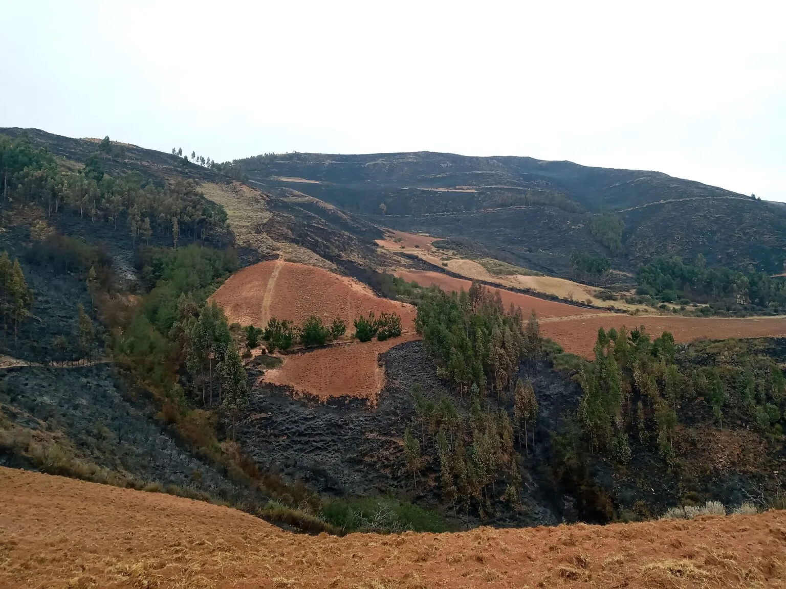

About the Environmental Issue

Santa Trinidad hill in Tambillo, Ayacucho, Peru by Aurora Cordero Palomino Wikimedia
The statistics are derived from Serfor's fire alert system, which is part of the agricultural ministry's national forest and wildlife department in Peru. The Cusco Wildfires, which killed five people and burned 16,000 hectares, are the first wave of fires in the area.